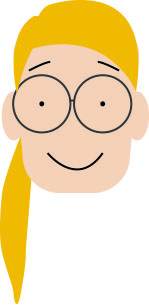
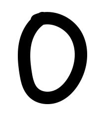

-
הספירה שאנחנו רגילים
אליה נקראתספירה דצימלית עשרונית
בבסיס 10
זה אומר שהמספרים מיוצגים באמצעות 10 ספרות
ועל ידי חזקות של 10 - 
-

-
תזכורת חזקות
כל מספר בחזקת אפס הוא אחד
בספירה דצימלית כל מספר מתואר על ידי חזקות של 10, שהן 1, 10, 100 וכו'
בוא נראה איך המספר 25 בנוי